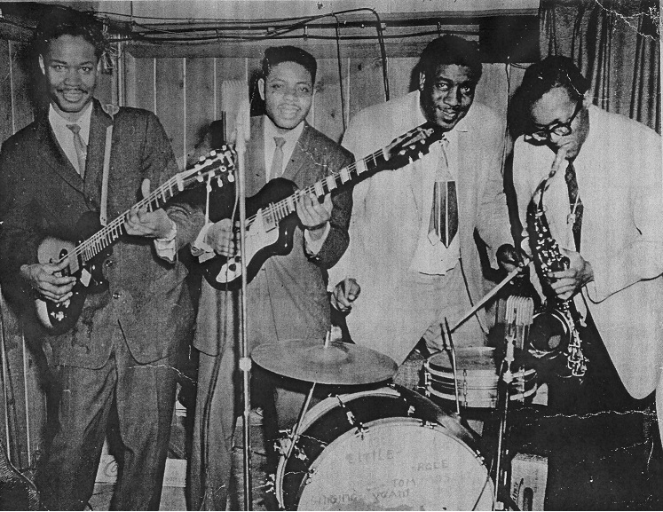

<main>
  <section class="chicago conteudo">
    <h2>Chicago Blues</h2>
    <div class="texto-informativo tipo-blues">
      <p>
        Na metade do século XX, após a guerra houve a “Grande Migração”, em que
        trabalhadores negros pobres da região sul dos Estados Unidos migram para
        cidades do norte ricas e com mais oportunidades, em especial Chicago. Ao
        irem para as cidades do norte, levaram consigo a cultura do Blues.
      </p>
      
      <p>
        Neste gênero foram incorporados instrumentos elétricos, como a bateria,
        baixo, piano e até saxofone. As músicas falavam sobre tristezas,
        sucessos e as frustrações da vida de trabalhador. Além disto, para o
        Blues de Chicago a amplitude do violão já não era suficiente para
        acompanhar outros instrumentos como baixo e bateria, e muitos músicos
        começaram a usar captadores elétricos em seus violões. A tendência logo
        se espalhou, e muitos fabricantes deram início ao desenvolvimento de
        instrumentos com estas exigências. Era o nascimento das guitarras Blues,
        as famosas semi-acústicas.
      </p>
      <p>
        Bruce Iglauer, fundador da Alligator Records, disse que o Chicago Blues
        é a música da cidade industrial e tem um senso industrial sobre isso,
        sendo assim, este gênero musical se baseia em termos e símbolos dos
        Blues anteriores, porém possui um estilo urbano.
      </p>
      <p>
        Uma curiosidade sobre Chicago é que lá acontece o Chicago Blues
        Festival, o maior festival de Blues gratuito do mundo, ocorrendo em
        junho, no Millenium Park. Esse evento dura cerca de três dias, onde é
        enaltecido a cultura do Blues e outros gêneros que foram inspirados pelo
        Blues. Esse festival é realizado há mais de três décadas, onde vários
        nomes importantes e populares, como BB King, Bo Diddley, Buddy Guy,
        Stevie Ray Vaughan e Etta James já passaram por lá.
      </p>
    </div>
  </section>
</main>
